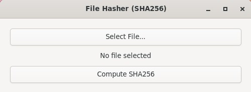
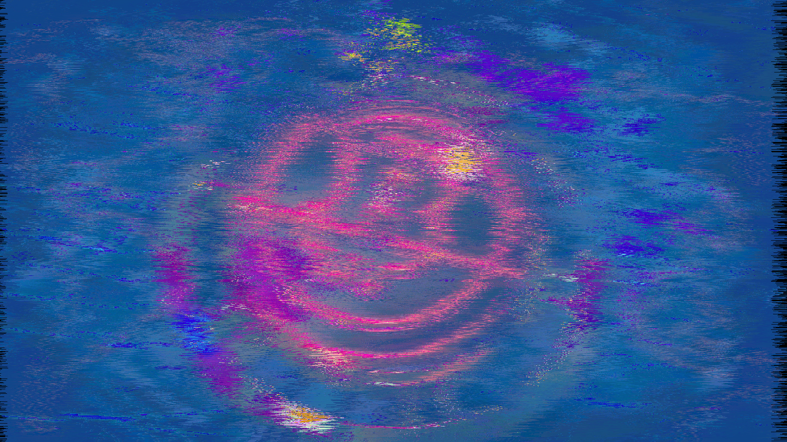
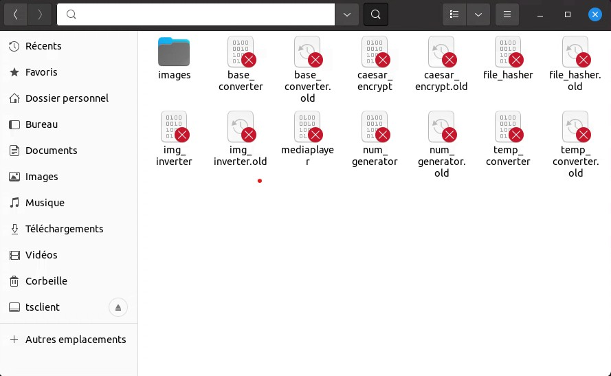

Dans le cadre de ce cours de virologie informatique, nous avons du développer un virus de type compagnon, il se substitue donc aux fichiers exécutables à son niveau et les renomme pour pouvoir leur rendre la main afin d'éviter d'éveiller les soupçons de l'utilisateur. Pour ce faire, nous avons du développer 6 utilitaires qui permettront de jouer les victimes lors de l'infection.
L'utilisateur n'étant pas un professionnel de la sécurité, le virus se situe dans un lecteur d'images (mediaplayer) avec un dossier d'images permettant de l'inciter à l'utiliser.
Pour ce qui est du partage des tâches, avec mon binôme nous avons chacun fait de tout, que ce soit les utilitaires et le virus en lui même.
-Wall pour avoir tous les warnings lors du
développementbuild/debug/install/debug/build/release/install/release/Le projet utilise plusieurs bibliothèques système :
companion-virus/
├── CMakeLists.txt # Configuration CMake principale
├── CMakePresets.json # Presets de compilation (debug/release)
├── setup_test_env.sh # Script de préparation de l'environnement de test
├── assets/ # Images de test pour le MediaPlayer
├── include/ # En-têtes avec interfaces publiques
│ ├── virus/
│ ├── utils/
│ └── common/
└── src/ # Code source organisé par module
├── virus/ # Virus compagnon (MediaPlayer)
├── utils/ # 6 utilitaires (séparation UI et logique métier)
└── common/ # Fonctions communes (GUI utils)Étape 1 : Installation des dépendances
sudo apt-get install gcc cmake libssl-dev libglib2.0-dev libgio-2.0-dev libgtk-4-dev libgd-devÉtape 2 : Configuration avec CMake Presets
cmake --preset=releaseÉtape 3 : Compilation
cmake --build --preset=releaseÉtape 4 : Préparation de l'environnement de test
bash setup_test_env.shCe script crée un répertoire build/home/user1/ simulant le répertoire donné dans les consignes :
images/ contenant les medias du projet.old pour vérifier l'infection
et propagationLe projet est structuré selon une architecture en trois couches :
┌─────────────────────────────────────────────────────────────┐
│ Virus Compagnon (MediaPlayer) │
│ - Détection des fichiers exécutables pour infection │
│ - Vérification contre la sur-infection │
│ - Propagation par duplication + renommage │
│ - Interface GUI pour afficher les images │
└──────────────────────┬──────────────────────────────────────┘
│
│ Appelle les utilitaires infectés
▼
┌─────────────────────────────────────────────────────────────┐
│ Utilitaires (6 exécutables) │
│ - Base Converter : Conversions de bases numériques │
│ - Caesar Encrypt : Chiffrement par décalage │
│ - File Hasher : Hachage SHA256 de fichiers │
│ - Image Inverter : Inversion de couleurs d'images │
│ - Num Generator : Génération de nombres aléatoires │
│ - Temp Converter : Conversions de températures │
└──────────────────────┬──────────────────────────────────────┘
│
│ Utilisent les fonctions communes
▼
┌─────────────────────────────────────────────────────────────┐
│ Couche Commune │
│ - Utilitaires GUI : Éléments graphiques │
│ - Gestion mémoire : Allocation/libération de ressources │
│ - Dépendances sys : GTK4, GLib, OpenSSL, GD │
└─────────────────────────────────────────────────────────────┘Chaque utilitaire possède la même structure pour faciliter le développement et la compréhension :
utilitaire/
├── core.c # Logique métier (calculs etc...)
├── ui.c # Interface utilisateur GTK4
└── header.h # Interface publique Le projet est composé de :
| Module | Dépendances | Utilisé par |
|---|---|---|
| Virus | common (gui_utils) | Infecte les autres modules |
| Base Converter | common | Utilisateurs / Virus |
| Caesar Encrypt | common | Utilisateurs / Virus |
| File Hasher | common + OpenSSL | Utilisateurs / Virus |
| Image Inverter | common + GD | Utilisateurs / Virus |
| Num Generator | common | Utilisateurs / Virus |
| Temp Converter | common | Utilisateurs / Virus |
| Common | GTK4, GLib, GIO | Tous les modules |

Utilitaire de chiffrement simple basé sur le chiffre de César (décalage de lettres alphabétiques).
Fonctionnalités :
Implémentation :
caesar_cipher_char(shift, character) - applique le décalage circulaire modulo
26Utilitaire de hachage cryptographique utilisant l'algorithme SHA256.
Fonctionnalités :
Implémentation : Utilise OpenSSL (libssl-dev)
Application : Vérification d'intégrité, détection de fichiers modifiés, empreinte numérique
Convertisseur entre différentes bases numériques (binaire, octal, décimal, hexadécimal, et jusqu'à base 36).
Fonctionnalités :
Implémentation :
Générateur de nombres pseudo-aléatoires configurable.
Fonctionnalités :
Implémentation : Utilise srand() et rand() du C standard
Application : tests statistiques, données de test aléatoires
Convertisseur de températures entre les trois grandes échelles (Kelvin, Celsius, Fahrenheit)
Fonctionnalités : Conversions bidirectionnelles entre les différentes échelles, affichage instantané.
Formules implémentées :
(C × 9/5) + 32 | F → C : (F - 32) × 5/9C + 273.15 | K → C : K - 273.15Utilitaire de traitement d'image basique : ou exclusif entre une clé et les composantes rgb. Légère distorsion de l'image.
Fonctionnalités :
RGB → (R^clé, G^(clé*2), B^(clé*3))Implémentation :
libgd-dev) pour manipulation des images
Le virus compagnon est un virus qui se substitue aux utilitaires en renommant les fichiers cibles avec l'extension '.old'. Son nom "MediaPlayer" correspond à sa charge utile (affichage d'images), masquant sa véritable nature virale.
Détection et identification du virus lui-même
Lors du premier lancement, le virus doit identifier s'il est lui-même une copie infectée ou l'original. Pour cela :
char *exe = getExec(); // Récupère le chemin complet du binaire en exécution
if (!g_str_has_suffix(exe, ".old")) { // Regarde si le fichier est déja infecté avec le .old
mediaplayer_scan_folder(folder, state); // Scanne les exécutables à son niveau
mediaplayer_verify_files(state); // Lance l'infection
}Processus d'infection
mediaplayer_scan_folder : Utilise g_dir_open(), teste chaque
fichier avec S_ISREG et X_OK, et construit une liste des cibles.mediaplayer_verify_files : Applique les vérifications de sécurité.Le virus évolue dans un contexte où il crée lui-même de nouveaux fichiers. Sans protection, il infecterait les mêmes fichiers à répétition (risque de corruption).
Première vérification : Fichier .old
if (g_str_has_suffix(file, ".old")) return;Deuxième vérification : Homologue .old existant
char *old_exec = g_strconcat(file, ".old", NULL);
if (g_file_test(old_exec, G_FILE_TEST_EXISTS | G_FILE_TEST_IS_EXECUTABLE)) return;Processus d'infection après vérification
if (rename(file, old_exec) == 0) {
if (mediaplayer_dup(old_exec) != 0) {
rename(old_exec, file); // si échec, on lui rend son nom original
}
}L'utilisateur a lancé ce qu'il pense être base_converter. Il doit voir base_converter
fonctionner. Pour cela nous utilisons execv() afin de lancer le programme original.
char *old_exec = g_strconcat(exe, ".old", NULL);
if (g_file_test(old_exec, G_FILE_TEST_EXISTS | G_FILE_TEST_IS_EXECUTABLE)) {
char *const argv_exec[] = {old_exec, NULL};
free_app_data(ad);
g_free(exe);
execv(old_exec, argv_exec); // donne la main au programme
exit(EXIT_FAILURE);
}Invisibilité technique : execv() remplace le processus, aucune création de
processus enfant n'est visible. Si le fichier .old n'existe pas, l'interface MediaPlayer s'affiche,
ce qui confirme la détection d'une anomalie pour la victime.
visibilité réelle : Si l'utilisateur est un minimum soucieux de son espace de travail, il remarquera rapidement qu'il a doublé de taille avec plus 6 utilitaires mais 12 à cause des .old Il vaudrait mieux les délocaliser pour plus de discrétion

Afin de valider le comportement de notre virus sans compromettre notre système, nous avons mis en place un environnement de test isolé.
Le script setup_test_env.sh effectue les actions suivantes :
build/release/home/user1/.
images/ pour que le
MediaPlayer ait du contenu.user1/.chmod 755 sur le répertoire pour garantir la
propagation du virus.mediaplayer../mediaplayer. En arrière-plan, le
programme scanne le répertoire et infecte les utilitaires (renommage en .old et duplication).
base_converter.old). Les fichiers sans extension sont des copies du
virus../base_converter. La copie du
virus s'exécute, tente de se propager, puis utilise execv. L'interface de conversion s'affiche
sans erreur.Nous avons implémenté une suite de tests utilisant CTest pour vérifier la robustesse de notre
code (core.c).
test/utils/ et
test/virus/.make test.Pour améliorer ce projet, nous avons tenu à assurer un environnement de développement strict et reproductible, portable et sécurisé contre les erreurs de manipulations
Le développement et le test d'un programme agissant comme un virus comportent des risques évidents de compromission accidentelle des fichiers de la machine hôte. Pour pallier cela, nous avons mis en place une architecture conteneurisée avec docker, comme vu lors des cours du semestre dernier :
Dockerfile basé sur Ubuntu 24.04 nous assure que le système d'exploitation et ses dépendances sont strictement identiques, peu importe la machine exécutant le projet.CMakeLists.txt (qui requiert la version 3.31 minimale), le conteneur embarque un script de compilation sur mesure (reinstall-cmake.sh) pour installer précisément la version 3.31.5 de CMake à partir de ses sources.libgtk-4-dev, libgd-dev, libssl-dev, etc.) se fait à l'intérieur du conteneur. Cela nous a permis d'infecter, dupliquer et observer le comportement du virus dans un environnement totalement "jetable" (via le flag --rm), garantissant l'intégrité de notre système d'exploitation hôte.Question 1 : Préciser quelles sont les grandes fonctions – que met en œuvre un virus lors d’une attaque –
et leurs enchaînements.
Un virus informatique classique met en œuvre trois grandes fonctions :
Question 2 : Détailler, dans le cas du virus compagnon, les étapes implémentées.
.old), duplication du virus
sous le nom de la cible.MediaPlayer fournit un service attendu pour ne pas
éveiller les soupçons.execv.Question 3 : Pourquoi la vérification contre la sur-infection doit-elle être double ?
Car le virus crée lui-même de nouveaux fichiers. Il faut 1) s'assurer que le fichier analysé n'est pas déjà un
fichier .old, et 2) vérifier si un fichier programme.old existe déjà, signifiant que
programme est en fait la copie du virus.
Question 4 : Que se produit-il si la copie du virus ne conserve pas les droits d'exécution ?
Le système d'exploitation renverra une erreur de type "Permission non accordée". L'utilisateur se rendra
immédiatement compte qu'une anomalie s'est produite, ce qui annule l'effet de furtivité et bloque la chaîne.
Question 5 : Comment peut-on amplifier l'infection ?
En modifiant la logique de recherche. On pourrait implémenter une recherche récursive pour explorer l'ensemble
de l'arborescence à partir de /home/user1/.
Question 6 : Que se produit-il si le transfert d'exécution est oublié ou échoue ?
L'utilisateur remarquera un comportement inattendu (l'outil de conversion ne s'ouvrira pas, ou verra l'interface
MediaPlayer). Il se doutera d'un problème, rompant l'invisibilité de l'attaque.
La réalisation de ce projet de virus compagnon a été une expérience d'apprentissage extrêmement enrichissante, nous permettant de faire la jonction entre la programmation système en C, le développement d'interfaces graphiques et les concepts fondamentaux de la cybersécurité.
Bilan technique : D'un point de vue technique, nous avons réussi à concevoir une suite logicielle complète et fonctionnelle. Le développement des six utilitaires (allant du chiffrement de César à la manipulation d'images) nous a permis de consolider nos acquis en algorithmique et d'explorer des bibliothèques comme OpenSSL et GTK4. La mise en place d'une architecture modulaire, ajoutée à un système de build moderne via CMake et à des tests automatisés (CTest), a garanti la stabilité de notre code tout au long du processus.
Le virus compagnon en lui-même, dissimulé sous les traits d'un MediaPlayer, a démontré avec succès sa capacité à usurper l'identité de programmes légitimes. Le mécanisme de double vérification a prouvé son efficacité pour éviter la sur-infection et maintenir la furtivité de l'attaque.
Néanmoins, si nous avions voulu aller un peu plus loin, nous aurions pu obfusquer le code comme vu en cours mais surtout déplacer les utilitaires .old originaux dans un dossier caché afin d'éviter la multiplication de ceux ci sur l'espace de travail de l'utilisateur.